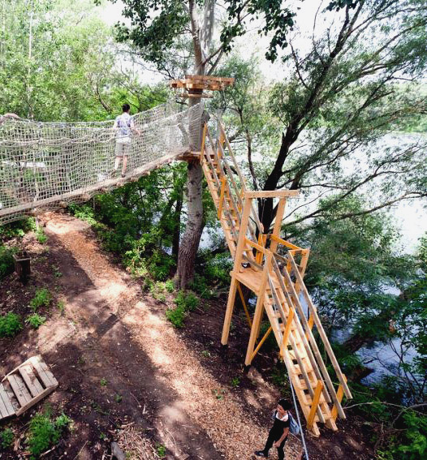
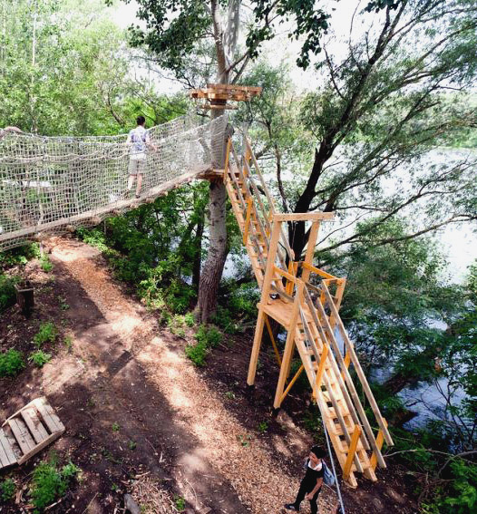

A Tisza-tó (más néven Kiskörei víztározó) Magyarország második legnagyobb tava. Tiszafüred a Tisza-tavi régió legnagyobb települése és idegenforgalmi központja, a Tisza-tó fővárosa. Az itt található holtág valaha a Tisza fő ágát képezte, melyet a folyószabályozás hozott létre, még a Tisza-tó megszületése előtt.
A város és környéke a csendes természeti környezetre vágyó vendégek kedvelt helye. Az ide látogatók legkedveltebb időtöltése a vízi túrázás, a lovaglás, a kerékpártúra, a horgászás, illetve a Kalandsziget meghódítása. A Tisza-tó vadvízi világa gyalog, kerékpárral, lóháton, de leginkább csónakkal járható be. A Tisza-tavi madárrezervátum védett terület, csak vezetővel látogatható.
| Kialakulása: | folyószabályozás |
| Vízfelszín: | 28 hektár |
| Vízmélység: | 2-5 méter |
| Itt található: | Tiszafüred, Tisza-tó Jász-Nagykun-Szolnok megye |

 
